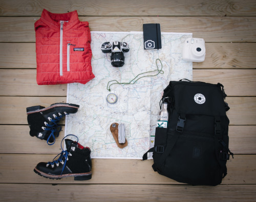

Bagagem

É importante planejar o que levamos nas viagens, principalmente pelo fato de contarmos com espaço reduzido, forçando-nos assim a levarmos somente o que realmente iremos precisar.
Confesso que é difícil selecionar e organizar tudo, sempre achamos que vamos precisar de mais do que estamos levando, mas geralmente tem sido ao contrário. É importante pesquisar bem sobre o local, clima e os passeios que se pretende fazer, para saber exatamente que tipo de roupa e calçado irá precisar.
Assinto alguns vídeos no youtube, aprendemos a "enrolar" as roupas de uma forma que conseguimos ganhar bastante espaço nos baús.